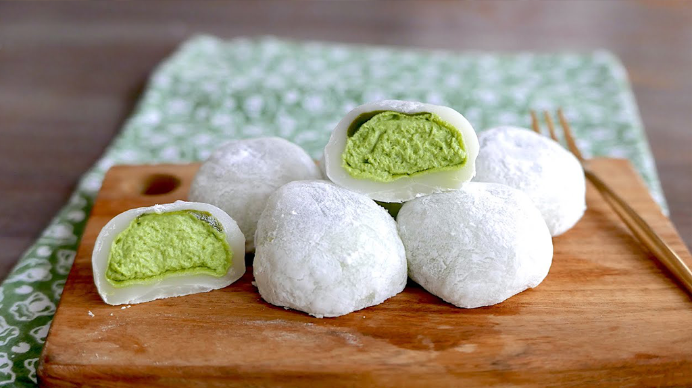

MOCHI DE MATCHA
JAPÃO - SOBREMESA

Uma sobremesa típica japonesa, leve e deliciosa é a opção perfeita para finalizar a experiência de uma refeição temática
O mochi, um bolinho de massa de arroz glutinoso, é uma opção leve e refrescante que harmoniza perfeitamente com o sabor rico e intenso dos pratos japoneses. Sua textura pegajosa e macia é um contraponto interessante à crocância dos grelhados e dos empanados, criando uma experiência única para o paladar. Além disso, o mochi pode ser preparado com diferentes recheios, como pasta de feijão doce ou frutas. É um doce atemporal, apreciado por pessoas de todas as idades no mundo todo.
INGREDIENTES
- 250g arroz mochigome;
- 2 colheres de sopa de matcha em pó;
- 4 colheres de sopa de açúcar;
- 1 litro de água;
- amido de arroz
MODO DE PREPARO
- Lave, escorra e coloque o arroz em uma vasilha. Cubra o arroz com água até um dedo de altura e deixe descansar por 4 horas.
- Escorra a água do arroz e bata os grãos no liquidificador com 100ml de água limpa. Junte o matcha em pó e continue batendo até obter uma massa homogênea. Se precisar, adicione mais água aos poucos até a massa ficar lisa e macia.
- Transfira a massa de arroz e matcha para uma vasilha limpa, coloque na geladeira e deixe descansar por 1 hora.
- Retire o excesso de água da massa do mochi, acomode a massa em uma panela de cozimento à vapor e cubra com um pano fino umedecido.
- Cozinhe a massa por aproximadamente 40 minutos ou até que a massa fique bem consistente, mexendo de vez em quando com uma colher de pau.
- Coloque a massa do mochi em uma superfície plana polvilhada com amido de arroz e deixe esfriar.
- Com as mãos levemente umedecidas, separe em porções e enrole bolinhos de 3 a 4 cm de diâmetro.
- Por fim, polvilhe os bolinhos com um pouco de amido de arroz.
DICAS
- Fique atento à textura e ao ponto de cozimento da massa do arroz mochigome, para que não fique muito cremosa ou muito ressecada.